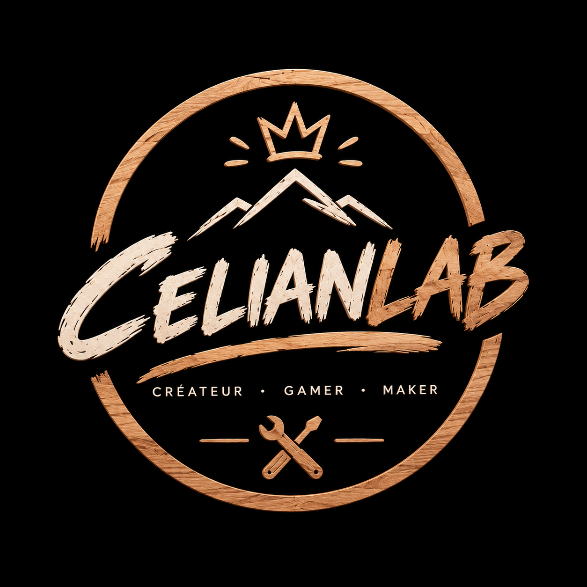

CELIANLAB
CRÉER.
TESTER.
PARTAGER.
Créateur de contenu · Gamer · Maker
Un univers autour du gaming, de la création de contenu, du bricolage, du laser et de projets que j'ai envie de tester.

TWITCH
LE LIVE.
EN DIRECT.
Gaming, discussions, découvertes et moments improvisés directement sur Twitch.
01
CelianLab
Retrouve-moi directement sur Twitch.
VIDÉOS
DU CONTENU.
PARTOUT.
Les streams peuvent devenir des vidéos, des shorts, des clips et de nouveaux contenus.

MAKER
CRÉER
POUR DE VRAI.
CelianLab ne s'arrête pas au digital. Je crée aussi des objets, je bricole, j'expérimente avec le laser et je teste de nouvelles idées.
BOUTIQUES
MES CRÉATIONS.
À RETROUVER.
Certaines créations sont disponibles directement sur mes plateformes.
CELIANLAB
QUI SUIS-JE ?
Je suis Celian.
Je développe CelianLab comme mon propre espace de création. Gaming, streaming, vidéos, montage, bricolage, laser et différents projets : j'aime apprendre en faisant.
Le but est simple : créer des choses qui me ressemblent, les partager et voir jusqu'où je peux aller.
CONTACT
UN PROJET ?
PARLONS-EN.
Collaboration, création de contenu, montage ou simplement une idée à partager.
celiandbs.contact@gmail.com